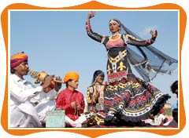
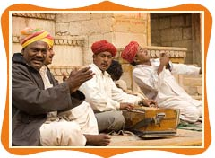

TRAVEL DIARIES
The Cultural Heritage...
21st January,2015

Rajasthan has a central place in enriching the Indian culture as a whole. The land of princes is an enigmatic state where tradition and history blend with contemporary lifestyle. The culture of the state is a result of its 5000-year old history and the varied topography of the desert land. Rajasthan has a diverse population belonging to different castes, tribes, and religions, which embellish the culture by their unique customs and beliefs. The rich cultural heritage of the state is reflected in its impressive folk music and dances, different languages and dialects, the majestic forts, palaces, mansions and divinely holy places of religious worship, its multihued fairs and festivals, its tempting cuisines, and, above all, its inviting and cheerful people.
The Art Of Dancing...
4th February,2015
The dances of Rajasthan are so inviting and engaging that they are bound to induce you to tap a foot or two along with the dancers. Rajasthani dances are essentially folk dances tracing their origin to rural customs and traditions. What is more interesting is that keeping alive the numerous dance forms are not the professional dancers but the ordinary rural men and women of Rajasthan. The dancers practicing these dance forms are, till date, religiously following the age old traditions and that's where, the beauty of these dances lies. Apart from the simple expressions and daring movements that add beauty to the dances, there are the vibrant and colorful costumes adorned by the dancers.
The Melodious State...
10th February,2015
If the majestic forts and palaces are the body of Rajasthan, then the folk music is the soul of the "Land of the Princes". The folk music gives the people of Rajasthan a means of forgetting the tough living conditions in the desert and even adds a charm to the desert land. The Rajasthan style of music has made significant contribution in enriching the Indian music as a whole. One finds the music of different flavors that is sung here develops according to the local customs of the village life of people. Here, you will find folklores, hymns in praise of the Lord, tales of chivalry of the Rajput kings, songs in praise of the rain god, etc.